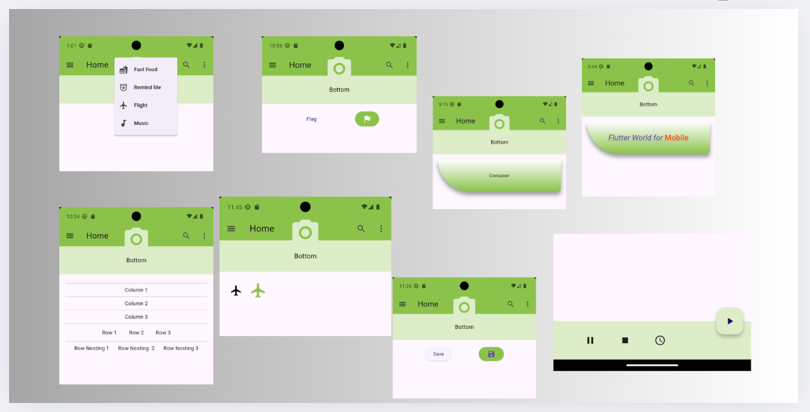

Among all the chapter, from 1-8, I am here in chapter 6, there is a lot to learn in this chapter, basics widgets. The photos you can see above are some of the basics widgets in chatpter 6. It includes putting a safeArea, adding a container, in a container add a text ot richtext with span. There is also Column, Row and RowNesting . I also learned about different buttons like floating action button, a button placed on the right side of the screen, Flatbutton - the flag, Raisedbutton - the save, Iconbutton - the flight. popupMenuButton, which displays a list of menu items an a buttonBar, which aligns button horizontally.
